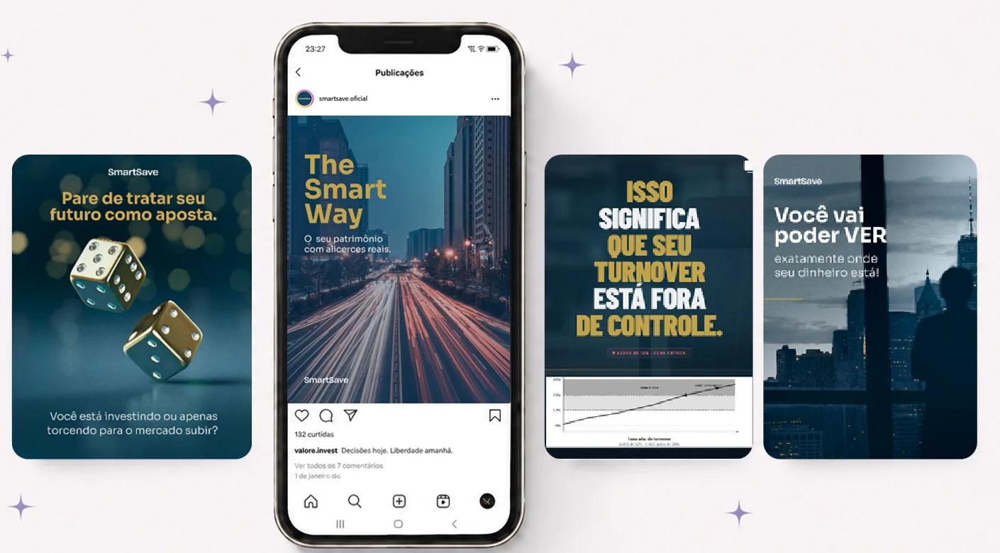

01Mercado financeiro · Fundos imobiliários
SmartSave
Uma startup de fundos imobiliários querendo falar de investimento com quem nunca investiu.
A SmartSave nasceu pra democratizar o investimento em fundos imobiliários. O desafio era explicar um assunto técnico sem assustar quem está começando e sem perder a confiança de quem já entende do mercado.
O que eu fiz
Criei conteúdo pra Instagram e LinkedIn, cuidei da manutenção do tom de voz da marca e desdobrei esse discurso em peças educativas, institucionais e de marca. Também editei vídeos educativos com motion.
A estratégia. Transformar tema técnico em conversa. A linguagem ficou mais clara e reconhecível em todos os pontos de contato, com a educação financeira puxando a proximidade e o rigor sustentando a confiança.
- Planejamento e criação de conteúdo
- Guia e manutenção do tom de voz
- Posts educativos e institucionais
- Conteúdo de LinkedIn pra lideranças
- Edição de vídeo com motion
